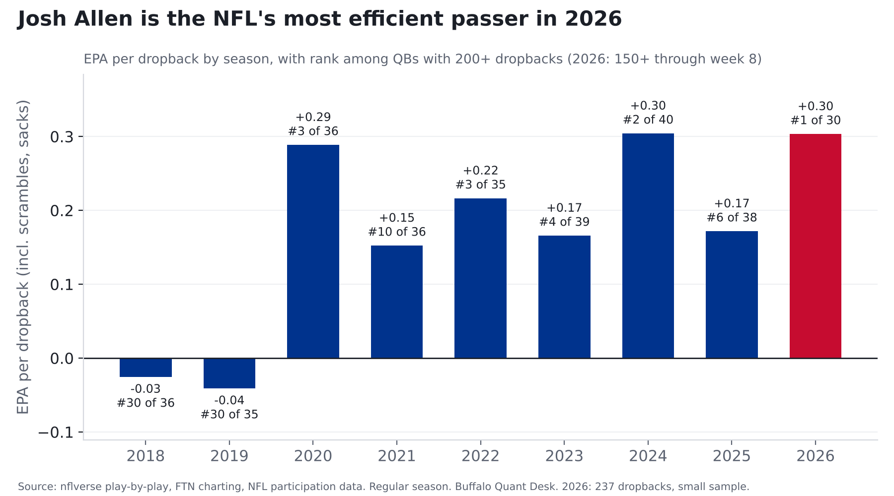
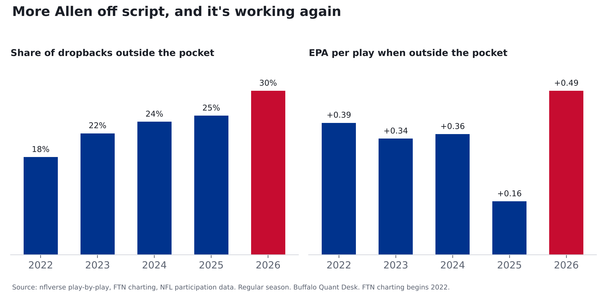
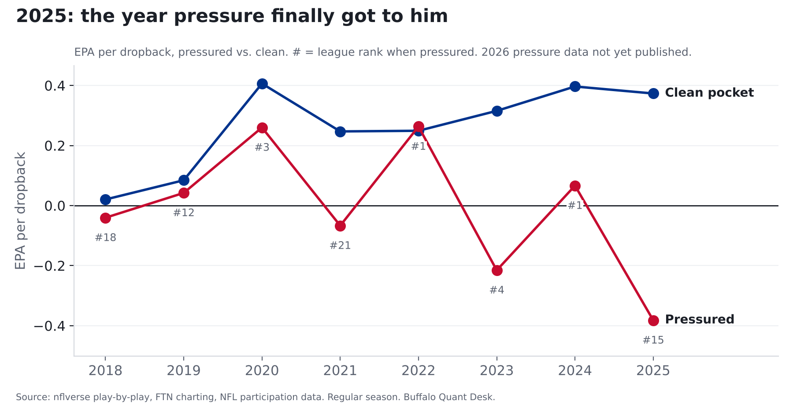
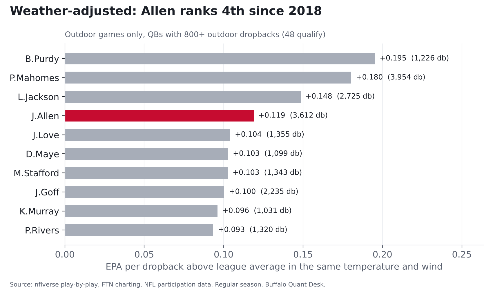

Josh Allen, 2018 to now: what the data actually says
Nine seasons, four play-callers, every dropback. He's the most efficient passer in football, and he's winning off script.
Finding: Through week 8, Josh Allen leads the NFL in EPA per dropback (+0.303), and he is getting there by leaving the pocket more than ever: 30% of his dropbacks, 5th-most in the league, at +0.49 EPA per play, his best since charting began.
All QB numbers are per dropback and include scrambles and sacks. Regular season only. 2026 is 237 dropbacks: small sample.

The short version
- He's the most efficient passer in football right now, at +0.303 EPA per dropback, ahead of B.Purdy (+0.287). He has improved under every play-caller he's had.
- More off script than ever, and it's working again. 30% of dropbacks outside the pocket (league: 20%), producing +0.49 EPA per play.
- 2025 was when it broke. Under pressure he fell from #1 to #15 (-0.38 EPA), off-script plays lost more than half their value, and his sack rate nearly tripled.
- Cold is not his problem. Weather-adjusted, he ranks 4th of 48 since 2018, and his edge over the league is biggest below freezing (+0.139).
- Man coverage is the soft spot. 10th of 45 against zone, 23rd against man (2018-25).
1. By coaching era
Play-caller eras: Daboll (2018-21); Dorsey (2022 to week 10 of 2023, fired Nov. 14, 2023); Brady as OC (week 11 of 2023 through 2025); Brady as head coach with Carmichael calling plays (2026).
| Era | Games | Dropbacks | EPA/db | Success | CPOE | Avg depth of target | Sack rate | Out of pocket | Play action |
|---|---|---|---|---|---|---|---|---|---|
| Daboll OC 2018-21 | 57 | 2132 | +0.120 | 48.7% | +0.8 | 9.0 | 5.4% | n/a | n/a |
| Dorsey OC 2022-23 wk10 | 26 | 1038 | +0.199 | 52.8% | +3.6 | 8.9 | 4.4% | 19.7% | 19.1% |
| Brady OC 2023 wk11-25 | 39 | 1347 | +0.222 | 48.7% | +1.9 | 8.1 | 4.8% | 24.2% | 20.6% |
| Brady HC 2026 | 7 | 237 | +0.303 | 48.1% | +4.0 | 9.0 | 5.5% | 30.0% | 26.6% |
EPA per dropback has risen under every play-caller. The 2026 offense throws deeper (average depth of target 9.0 yards, up from 8.1) and uses more play action (27% vs 21%).
| Season | Dropbacks | EPA/db | League rank |
|---|---|---|---|
| 2018 | 394 | -0.025 | #30 of 36 |
| 2019 | 438 | -0.041 | #30 of 35 |
| 2020 | 627 | +0.289 | #3 of 36 |
| 2021 | 673 | +0.152 | #10 of 36 |
| 2022 | 650 | +0.216 | #3 of 35 |
| 2023 | 649 | +0.166 | #4 of 39 |
| 2024 | 539 | +0.304 | #2 of 40 |
| 2025 | 547 | +0.172 | #6 of 38 |
| 2026 | 237 | +0.303 | #1 of 30 |
2. Off script

| Season | Dropbacks | Out of pocket | EPA out of pocket | EPA in pocket |
|---|---|---|---|---|
| 2022 | 650 | 17.8% | +0.392 | +0.178 |
| 2023 | 649 | 22.2% | +0.345 | +0.115 |
| 2024 | 539 | 24.3% | +0.358 | +0.287 |
| 2025 | 547 | 25.4% | +0.159 | +0.176 |
| 2026 | 237 | 30.0% | +0.487 | +0.225 |
2026 out-of-pocket rate ranks 5th among QBs with 150+ dropbacks; league average 20%. The 2025 dip is the story inside the story: he left the pocket as often as ever, but the plays stopped working.
3. Under pressure

| Season | Pressure rate | EPA clean | EPA pressured | Rank pressured |
|---|---|---|---|---|
| 2018 | 33.5% | +0.020 | -0.041 | #18 of 33 |
| 2019 | 27.7% | +0.084 | +0.042 | #12 of 33 |
| 2020 | 34.6% | +0.406 | +0.260 | #3 of 36 |
| 2021 | 29.5% | +0.247 | -0.067 | #21 of 34 |
| 2022 | 27.2% | +0.249 | +0.263 | #1 of 33 |
| 2023 | 28.2% | +0.315 | -0.215 | #4 of 39 |
| 2024 | 28.0% | +0.397 | +0.066 | #1 of 40 |
| 2025 | 26.7% | +0.373 | -0.382 | #15 of 38 |
Career: +0.284 clean, -0.004 pressured; league over the same span +0.232 clean, -0.198 pressured. His pressured EPA is about +0.19 better than the league's.
Checked a second way: is pressured performance just noise? Across 183 QB season-pairs since 2018, pressured EPA correlates 0.49 with the next season, clean-pocket EPA 0.38. Pressure performance is at least as repeatable as clean-pocket play, so 2025 should be read as a real dip, not bad luck. 2026 pressure data (NFL participation) is not yet published; PFR's separate charting has his 2026 pressure rate narrowly the lowest of his career.
Sack rate by season: 2018: 7.1% · 2019: 8.0% · 2020: 4.1% · 2021: 3.9% · 2022: 5.1% · 2023: 3.7% · 2024: 2.6% · 2025: 7.3% · 2026: 5.5%.
4. Weather
Outdoor games only. Each dropback compared with the league average in the same temperature and wind band.
| Temperature | Allen dropbacks | Allen EPA | League EPA | Allen edge |
|---|---|---|---|---|
| <=32F | 398 | +0.162 | +0.023 | +0.139 |
| 33-45 | 845 | +0.089 | +0.003 | +0.086 |
| 46-60 | 922 | +0.137 | +0.044 | +0.093 |
| 61-75 | 911 | +0.211 | +0.055 | +0.156 |
| 76+ | 536 | +0.144 | +0.057 | +0.087 |
| Wind | Allen dropbacks | Allen EPA | League EPA | Allen edge |
|---|---|---|---|---|
| 0-9 mph | 2025 | +0.197 | +0.059 | +0.137 |
| 10-14 | 866 | +0.078 | +0.011 | +0.068 |
| 15+ | 721 | +0.096 | -0.008 | +0.104 |

| Rank | QB | Outdoor dropbacks | EPA above same-conditions average |
|---|---|---|---|
| 1 | B.Purdy | 1,226 | +0.195 |
| 2 | P.Mahomes | 3,954 | +0.180 |
| 3 | L.Jackson | 2,725 | +0.148 |
| 4 | J.Allen | 3,612 | +0.119 |
| 5 | J.Love | 1,355 | +0.104 |
| 6 | D.Maye | 1,099 | +0.103 |
| 7 | M.Stafford | 1,343 | +0.103 |
| 8 | J.Goff | 2,235 | +0.100 |
| 9 | K.Murray | 1,031 | +0.096 |
| 10 | P.Rivers | 1,320 | +0.093 |
Domes: +0.264 EPA per dropback in 20 dome games vs +0.160 outdoors. League: +0.044 in domes, +0.040 outdoors. Monday's game in Minnesota is indoors.
5. Turnovers
Interception-worthy throw rate (FTN): 2022: 5.2% · 2023: 3.9% · 2024: 2.4% · 2025: 3.3% · 2026: 3.0%. The 2022-23 turnover problem is gone.
6. Coverage (2018-25)
| Season | Man dropbacks | EPA vs man | Zone dropbacks | EPA vs zone |
|---|---|---|---|---|
| 2018 | 136 | -0.138 | 183 | +0.102 |
| 2019 | 202 | +0.069 | 162 | +0.077 |
| 2020 | 231 | +0.397 | 341 | +0.327 |
| 2021 | 218 | +0.062 | 385 | +0.207 |
| 2022 | 191 | +0.162 | 375 | +0.299 |
| 2023 | 300 | +0.199 | 347 | +0.143 |
| 2024 | 303 | +0.319 | 236 | +0.284 |
| 2025 | 229 | +0.086 | 317 | +0.228 |
Career +0.170 vs man (23rd of 45), +0.223 vs zone (10th). 2026 coverage data is not yet published.
Designed runs
EPA per designed run (not scrambles), with attempts: 2018: +0.13 (36) · 2019: +0.01 (40) · 2020: -0.07 (51) · 2021: +0.22 (62) · 2022: +0.08 (56) · 2023: +0.39 (54) · 2024: +0.47 (51) · 2025: +0.44 (46) · 2026: +0.13 (28). The 2026 number is on only a few dozen runs, but so far the offense is getting much less from his legs by design.
Method and caveats
- Dropbacks from nflverse play-by-play; QB on a scramble is the rusher, so scrambles are credited correctly.
- Pressure, coverage and time to throw come from NFL participation data (2018-25). Out-of-pocket, play action and interception-worthy throws from FTN charting (2022+). Different charters define pressure differently.
- Weather bands: temperature ≤32, 33-45, 46-60, 61-75, 76+ F; wind 0-9, 10-14, 15+ mph. Domes and closed roofs excluded from the weather model.
- Eras are play-caller eras, verified against reporting on the November 2023 change.